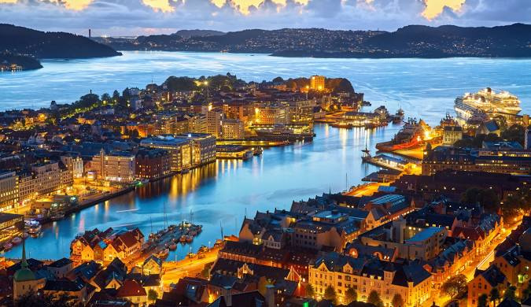

Bergen
Home
Local
Multimedia
Informação
Quizz
Viagem

Vista panorâmica de Bergen, uma encantadora cidade costeira da Noruega!
Quizz
Dados pessoais
Nome
Apelido
Email
Quiz de Conhecimento Geral sobre Bergen
1. Qual é o nome da famosa área histórica de Bergen, Patrimônio Mundial da UNESCO?
2. Quantos dias, em média, chove por ano em Bergen?
3. Qual destas montanhas faz parte das "Sete Montanhas" que rodeiam Bergen?
Monte Ulriken
Montanha Everest
Alpes
4. Quais destas comidas típicas podes encontrar no mercado de peixe de Bergen? (Escolha múltipla)
Salmão
Carne de Baleia
Caranguejo
5. Se pudesses visitar Bergen, qual seria a data da tua viagem?
6. Qual é o teu email para receberes o resultado do quiz?
7. Numa escala de 1 a 10, o quanto gostarias de visitar Bergen?
8. Qual cor achas que melhor representa Bergen?
9. Qual o teu número de telefone (caso precises de mais informações)?
10. Qual estação do ano seria ideal para visitar Bergen?
Verão
Inverno
Primavera
Outono
11. Descreve numa frase por que gostarias de visitar Bergen.
12. Qual outra cidade norueguesa te interessa visitar além de Bergen?